Email Us
Please send us an email, we would love to hear from you!

We had spent the day on flights, bouncing our way down the continent from Canada back to Mexico, when Mexico City came into view. As we dropped in towards the city we were rewarded with a good view. The sprawling metropolis stretched out to the mountains surrounding it, quite an impressive site. It was especially interesting seeing residential areas with their matching terracotta clay roof tiles. Soon we were on the ground but it took a long time to get through customs. We had lots of time and had booked the same hostel as we had stayed in downtown Mexico City when we left previously. We decided to take the subway, but acutely aware we would have to try and keep our bags close to us since we were carrying all our luggage. Fortunately, it wasn't that busy and was quite familiar to us now. It was a rather long ride with one connection along the way. When we arrived at the stop just to the south of our hostel, we noticed a small crowd outside the doors of the subway. It was a one way exit so we decided to watch for a second, nothing seemed too peculiar, and Annette suggested it could be a sudden downpour that people were sheltering from. We pushed through the rotating carousels and the one way gate up the stairs and to the outside. There were lots of people around but there was no sign of rain. We couldn't tell direction so had to pull out the phone to find out which road went north.
Immediately we figured out that things weren't normal. The main street leading to the Zocalo was empty of cars and people where just walking around on it. We started walking and then noticed that at the end of the street approximately at where our hostel would be was a blockade of police or military vehicles side by side from sidewalk to sidewalk. In front of them was a line of police with riot shields standing shield to shield. We didn't know what to think. So, as as common in Mexico City there was lots of transportation police standing on each street corner. I attempted to talk to one only to find he fortunately spoke some English. I tried to show him on the map where our hotel was and asked what was going on. He couldn't quite explain but told us that it was safe to go there. Okay, I guess we give it a try. We started walking towards the riot line, and then all of a sudden, something happened at the front of the crowd and the whole street started running in the opposite direction with some people dashing behind buildings at a cross street and some people choosing to stand with their back again a storefront slightly recessed in the door frame. We also ran in this direction, as it seemed the logical thing to do, and it was obvious that we weren't going to make it forward.
We got to a side street and looked at the map. Was the riot line just blocking the one street and we would be able to approach it from behind? We walked off street a block and then proceeded north again. When we got to our cross street that would lead us to our hostel again, we started down it. But soon, we could see that before we would get there the police had this blocked off too, shield to shield. Soon, they started advancing and we retreated again. Hmmm, at this point, it was time to give up and find another hotel. It was quite dark now and the streets felt dark and scarey. We didn't want to be on them anymore. We walked some distance to another hotel, and they had a room, it was expensive but we had to do it. We only had a couple pesos as we had already prepaid our other hostel in anticipation we would find an ATM tomorrow. Their policy was not to take credit cards but that seemed to relax when we said that was our only option, however, we still had to pay part of it in cash. We ended up eating at the hotel restaurant as it was now quite late, and we were exhausted from the day. While eating, the TV's were displaying a benefit concert for the earthquake that happened a couple weeks prior. We recognized the stage, it was being played in the main centre of the Zocalo square which would have been behind the police riot line. Potentially the area hit its maximum capacity and this was their way of turning more people around. So in the end it wasn't that dramatic, just a bit much after a long day of flying.
In the morning we found an ATM and boarded the subway again, heading northeast where we would get to where Annette had stashed the bicycle. She had found a parent of a colleague who lived in Mexico City and graciously offered to host our bike in his shed while we were away. From the end of the subway, we were at a mall. Walking through it we saw a Telcel location and decided to try to get a SIM card. This was an official Telcel location and we had experienced that this much more difficult than at the small dealers that are normally all over the place. It took a while before they understood what we wanted but eventually we got sorted out. With our new data, we decided to use an Uber for the rest of the journey. It took a little bit to set up but soon a car was on its way. The experience was nice, and the fixed rate billing meant while we could watch our progress on GPS, we didn't have to worry much about getting ripped off.
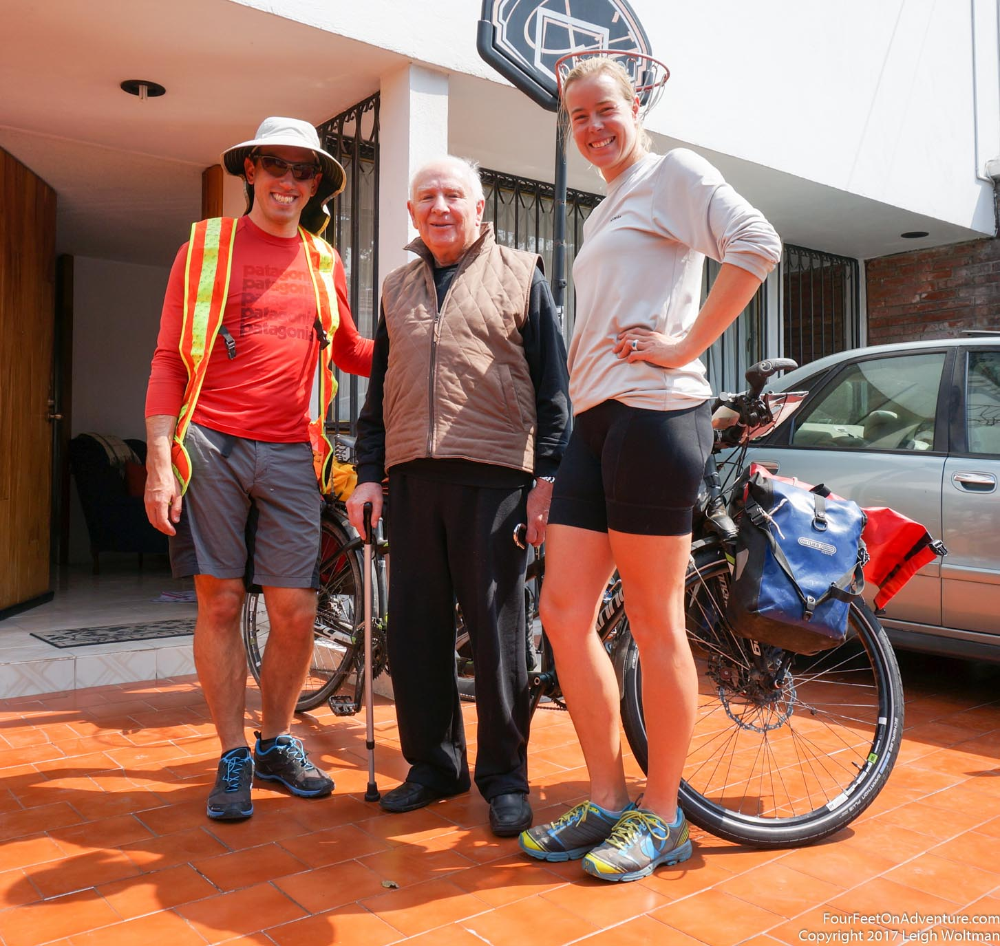
Our bicycle host was very welcoming and quickly gave us space in his courtyard to assemble all our gear on the bike. We ended up with too many of some consumable supplies and when dumping those also got rid of any spare parts that were well used and only being carried as second level of backup. The sun was hot and we ended up taking so long that we had to move a couple times to chase the shadowed area of the courtyard. But soon, we were ready to go and bidding farewell, we cycled down the street. Getting back into Mexico City traffic was a little bit humbling, cars were everywhere, honking and aggressively merging. We threaded down some less busy streets until we got to a freeway with no easy way across for us. Pedestrians were heading up and over an overpass for walking, and while we initially looked for any other option, resigned to the conclusion we would have to carry over. It was several flights of narrow stairs but we got up and over and was soon cycling on another fairly quiet street.
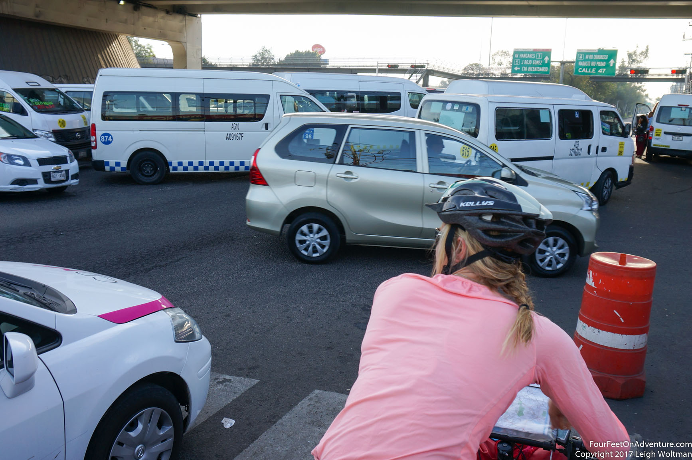
We wove our way down, eventually the road getting bigger and bigger. An elevated overpass took us up for a great view of the city stretching out around us. By late afternoon we were approaching only the centre of Mexico City and we decided to try and stay at the original place from the night before. They recognized us when we had to ask to use the freight/utility elevator to bring our bicycle up the six floors. Fortunately, they agreed that the previous night was 'crazy' and they were locked in their building by the police, and they therefore credited our previous payment to our current stay.
In the morning we departed down the elevator and started making our way eastward across the city. The city is huge, so we slowly made progress along. Eventually, we had to take a fairly major street with many lanes. We were on the outside road and not the expressway in the middle of the corridor. It meant traffic was slower, but choked with busses and minibuses. Soot and exhaust choked the air and I was surprised we were able to pedal along in the thin and dirty air. At one point, we had to take an overpass to get to another street, it was a little narrower than I would have liked. On this new street, which was also divided by a boulevard, we got to an intersection where the opposing traffic was in our lane. Had we cycled to the border with Australia? No, for some reason, the lanes of the street switched to opposite side of the road for two blocks and then switched back. Since there was no over pass anywhere, we couldn't figure out how this was more efficient since the intersections at the entrance and exit of the opposite area had to blank and let each side of the through street go only one at a time (since they had to cross). Slowly, the city got more and more residential, and then more and more rural, until we were finally on a highway much like we had cycled many months prior.
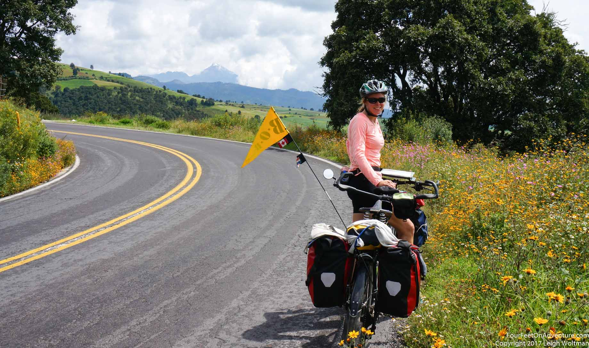
We had lunch at a crossroads. We would have to decide there wether we were too tired from the Mexico City traffic and turn around and find a close hotel, or we could push up and over the volcanic mountains surrounding the city. We decided on the second option, finally time to leave Mexico City. There were lots of trucks but the country quickly turned to forested hills. We soon passed some massive gravel pits which mostly eliminated our truck traffic. But it was up and up. As we climbed we could see the valley holding Mexico City behind us and over to the right was a view of a volcano with a snowy cap. We climbed for hours, often in the lowest gear, passing one small town which was getting ready for a road show carnival with a visible theme for the Day of the Dead holiday. The hill side was full of pine trees as we passed into the area protected as a national park area. Soon we were passing close to 3000 metres and our free highway merged close to the toll road. And then, it was primarily downhill. We sped off the mountain but with very sore butts. Pedaling all this after just jumping back on the bike wasn't the smartest thing to do. Annette graciously lent me her gel saddle pad and it helped put pressure on new spots.
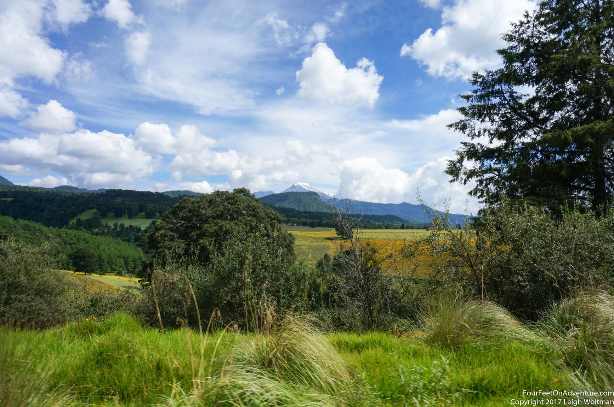
We would make our way into San Martín Texmelucan de Labastida which to aid in communication we just shortened to 'San Martin'. We took a hotel for the night. In the morning we left town in the direction of an archaeological ruins that Annette was eager to see. Our secondary road quickly deteriorated and we decided to give up on it. We connected with a larger road that went under the toll highway and we continued along another gravel road. It got us a fair distance and was soon following a train track. However, again, the road deteriorated into wet mud. We were too committed now to turn back so we pushed along eventually walking between the rails for a while. Once the road firmed up again, we were able to ride.
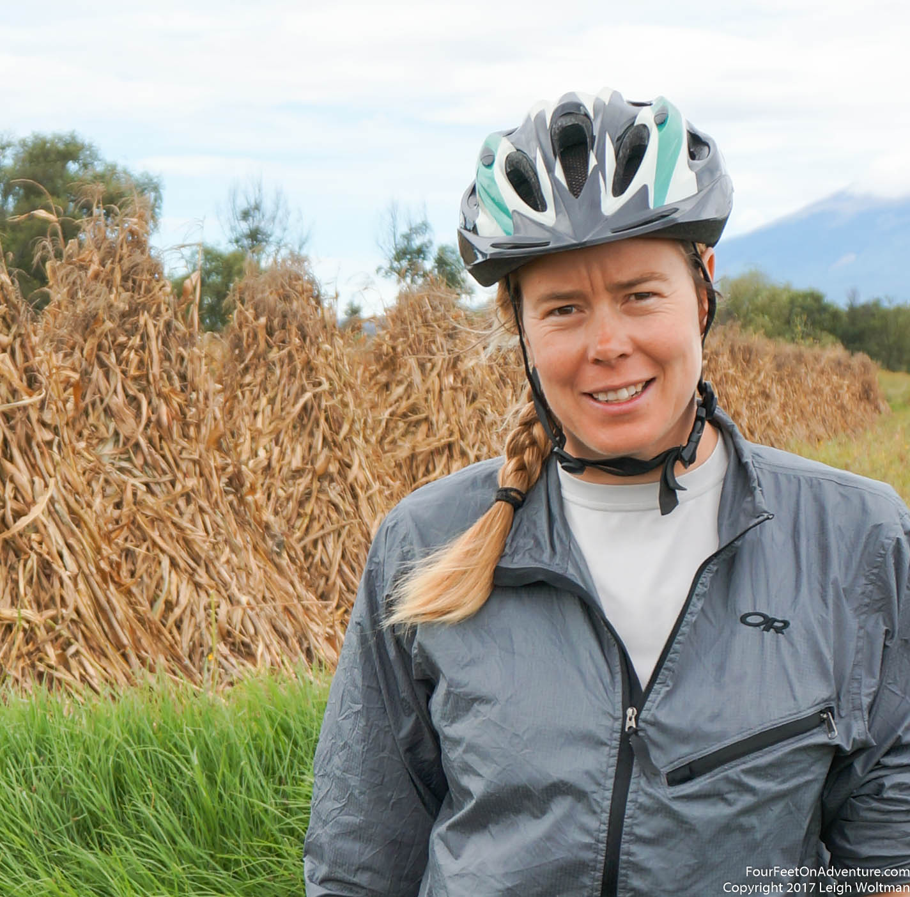
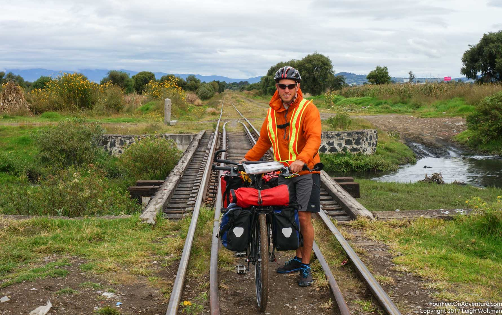
We eventually had to cut back under the highway on what was a tunnel with just enough room for one vehicle, but given the damp muddy conditions within, it was primarily for water to flow under the freeway. We pedalled to the town housing the ruins. Of course, like all good archaeological sites in Mexico, they chose a hill to build on, so we grinded up a steep hill having to take a break every couple hundred metres. When we got there, it was obviously quiet as we had a hard time identifying where the entrance was. Even though it was quiet, the guard wouldn't let us take the bicycle in, so we took turns taking a walk around. The central pyramid type building was quite large, and was under active reconstruction. A huge structure with a metal roof had been built over the site to protect probably it and the workers from rain. On the front side, dozens of people were working on the site using all manual labour. Most of them appeared to be employed in a bucket line where buckets of debris being excavated would be passed from one person to the next down the side of the pyramid. Along the walking loop, you got a great impression of the actual rooms in this giant building and along the way several of them had painted wall murals that had survived for thousands of years.
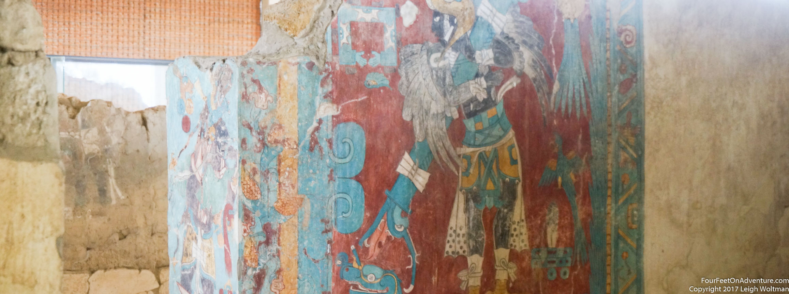
To leave the ruins, we backtracked a little and then decided to take a new route out of town. It turned out to be really good, a fairly quiet paved road leading to our next stop. It still took us several hours to get to Cholula. We found the main Zocalo and Annette went to investigate a hotel. As she was gone forever, a man on a bike came up to me and started asking questions. He spoke good English and talked about some bike tours in Mexico that he had done. When Annette came out saying the hotel was too expensive, he indicated that it was actually his uncle that owned it and he was coming to talk to him. He and Annette went back in to get a better deal which they offered us. He was very nice and gave us his phone number and a recommendation for dinner.
After getting the bike stowed away, we went to visit the ruins in this town, that's two in one day! Here we had to pay an entrance fee as the main attraction was the tunnels they had recently bore through the middle of this ruins revealing the various layers of buildings that had been built one on top of another. The tunnel was just big enough so we could walk through a little hunched over in single file. It had a metal grate for the floor. Along the way, every dozen metres or so, they had excavated another tunnel, often either going up or down. We were only allowed to explore one of these off shoots while the others we could only peer down. The tunnel seemed quite long when we were in it, twisting around, to the point where knowning that the area recently had a large earthquake, I decided that I had enough, and started jogging through. We eventually found the other side of the pyramid.
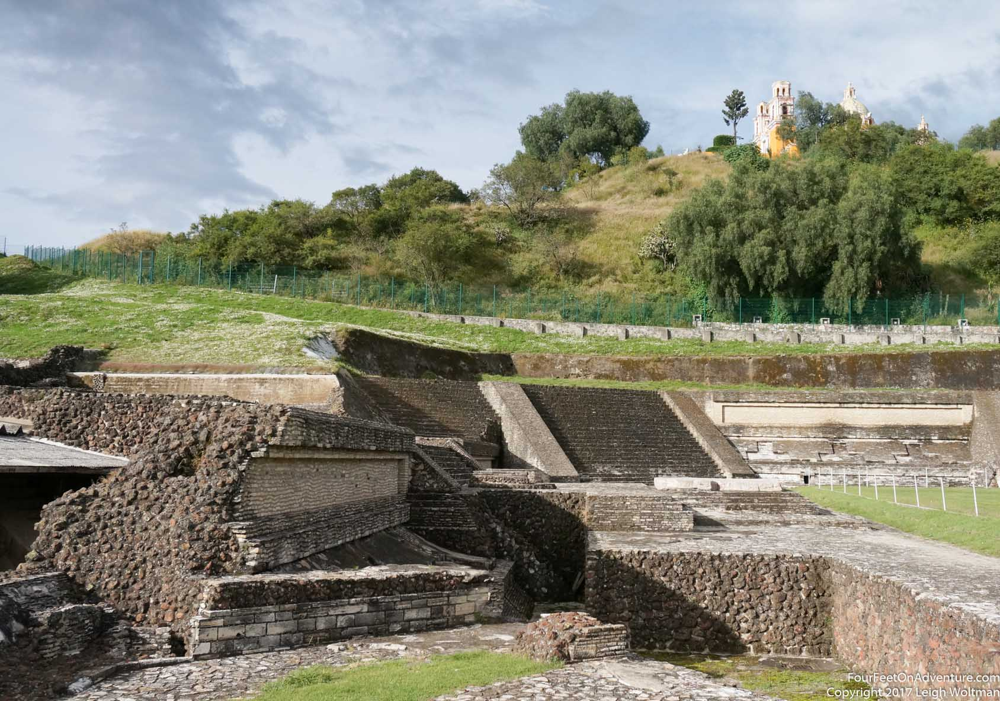
On the back side of the grounds, we could see the various layers of construction along with a view of the Spanish cathedral that had been built on top of the pyramid as a symbol of colonialism. The path looped around the pyramid with some signs indicating the various layers.
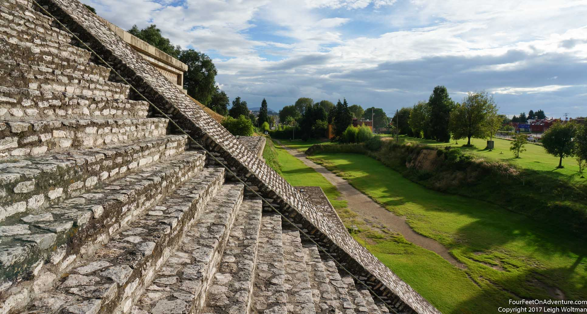
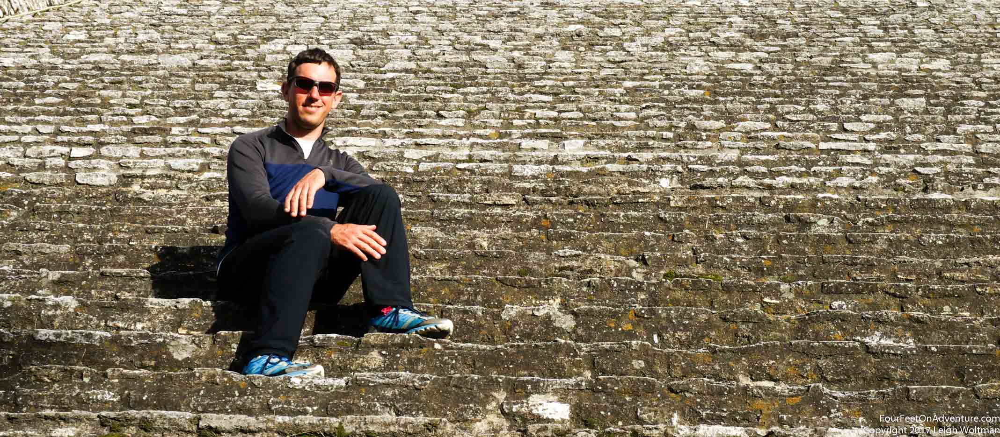
Once complete, we headed to dinner and the recommendation turned out to be perfect. The restaurant cooked with no meat, so Annette could happily choose anything off the menu. We liked our food and when the owner came to introduce himself, he offered a suggestion for dinner. It has a croissant which had been fried in egg and milk like french toast and then filled with avocado and honey among a couple other things. It was delicious!
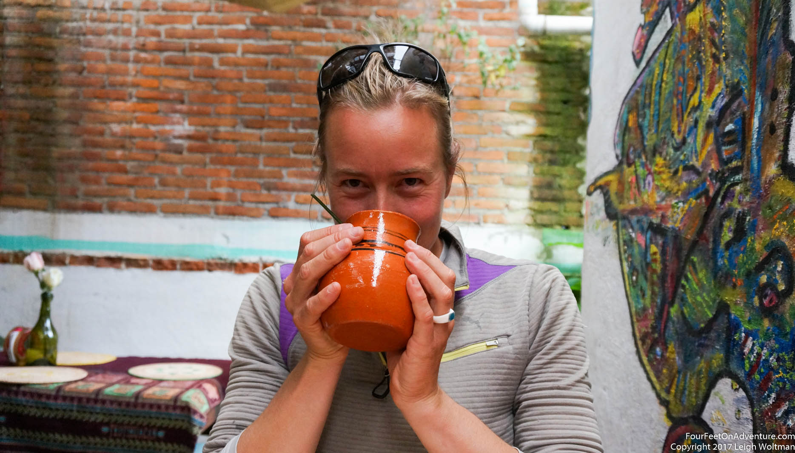
The next day we enjoyed our ride into Puebla. The road even had a bike lane for the first several kilometers, but soon it was back to heavy traffic much like Mexico City. Fortunately, while a large city it didn't take us too long to get into the centre of Puebla. We sat just off the main cathedral and enjoyed a brunch meal with gigantic chai tea lattes.
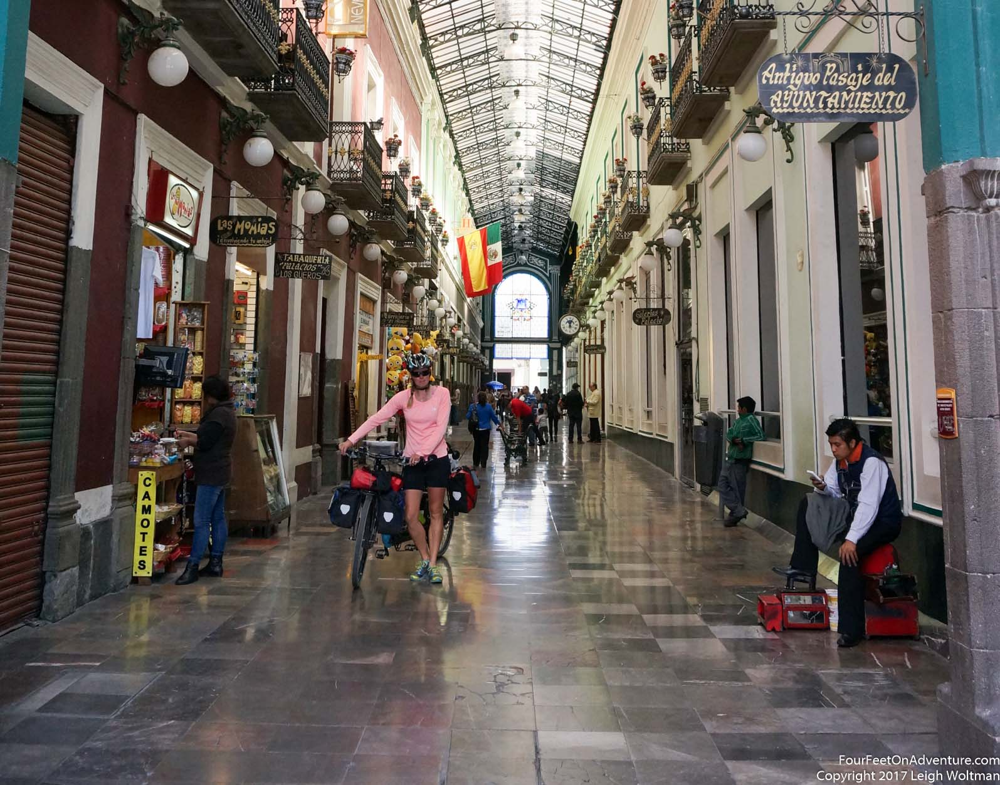
Now, we were looking at the map trying to jockey for position above the big drop. Since we hit the mainland of Mexico off the Baja, I had noticed that the ride out of Mexico City would involve a huge downhill onto the coastal plain. It looked like almost 100 kilometers of continuous downhill and with so much climbing over the past thousand kilometers of Mexico I had been dreaming of this downhill everyday. To maximize our usage of the downhill, I wanted to start the day just on the edge of the plateau and spend the day pushing as far as we could. For now, we would ride in that direction which we did. The scenery out of Puebla was not very interesting it was fairly flat and just farm country. We rolled along paved but small roads. Eventually, with rain and fatigue threatening, we decided to stop in Tecamachalco. It took us a little while to get a hotel room and for some reason the lady insisted that we take a room in the very corner for which we had to contort the bike to make it fit through the door. Every other room had a door that opened onto a car park which would have been vastly easier to get into.
My hair needed a cut so we stopped at a shop that had a barber inside cutting hair. We indicated our request and he said to take a seat. We were third in line. It took some time to work through the queue, but soon it was my turn. He spoke no English so I gave hand signals and a tiny bit of Spanish to indicate what I wanted. It turned out he was a true classic barber using somewhere around eight different tools on my head, including a straight blade which made me slightly nervous when he brought it up to my head. With scissors, he could make them whir like they were attached to a motor as he sculpted my head. In the end I got a pretty good haircut, not exactly what I was looking for but close enough.
The road cut north after our nights sleep and we were soon deciding what route we would go. The drop off the plateau was very steep and it was hard to tell exactly what were roads and what were dirt paths as all made massive switchbacks down the mountain. We decided to take the toll highway still not entirely sure if we were allowed to ride on them. We did know that it would have a huge shoulder so we could keep well out of the way of traffic. Our highway merged on and soon we were heading up a long hill, the trucks rolled by continuously, making me wonder if this was a sound choice. Once up the hill, traffic suddenly stopped. It must have been an accident on the huge downhill that closed the highway, as everyone was just parked and outside their vehicles. We cycled along on the shoulder occasionally having to weave into the two lanes of stopped traffic when the shoulder was blocked. We rode for a long way with a complete blocked highway, it was quite nice as we got to wave at people and there was no moving traffic to contend with. Eventually we decided to stop just before the big downhill at a small town. There was no exit so we had to walk a small trail along an overpass to join the secondary highways.
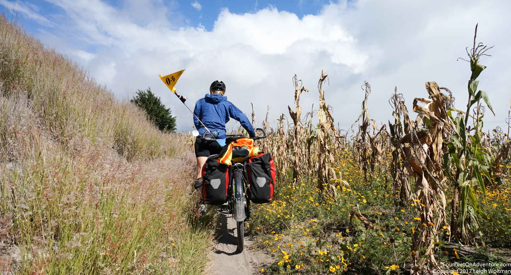
The only hotel marked on Google for the town of Esperanza was closed so we had to try our luck at the motor hotel. It was pretty awful. The dark concrete room was damp, there was no door on the bathroom and the shower was pretty awfully cold even when the owner said there was hot water. We understood there was no key, but as to why only became apparent when it was shown to us that you could just open the door by putting your finger in the lock. We spent the night huddled together with all our clothes on, under 4 dirty damp blankets. At about 2500 metres in elevation we were pretty high, and thus it was cold.
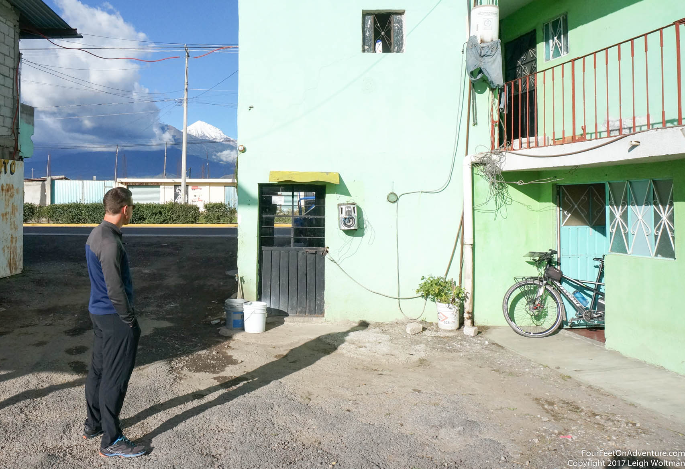
In the morning, we could see Orizaba, the third tallest mountain in North America above us with its snowy cap. The temperature was still cool and we have several layers on as we pedaled to rejoin the toll highway. At the toll booth we pedalled through confidentially waving to the gate attendant to make it seem like we knew we could get through. He waved back and we were on the highway. Truck traffic was heavy and all these transports speeding up after the tolls left a huge plume of choking exhaust over the highway. It wasn't the most pleasant way to start the day, but we kept looking up as the clear sky gave us such a beautiful view of Orizaba.
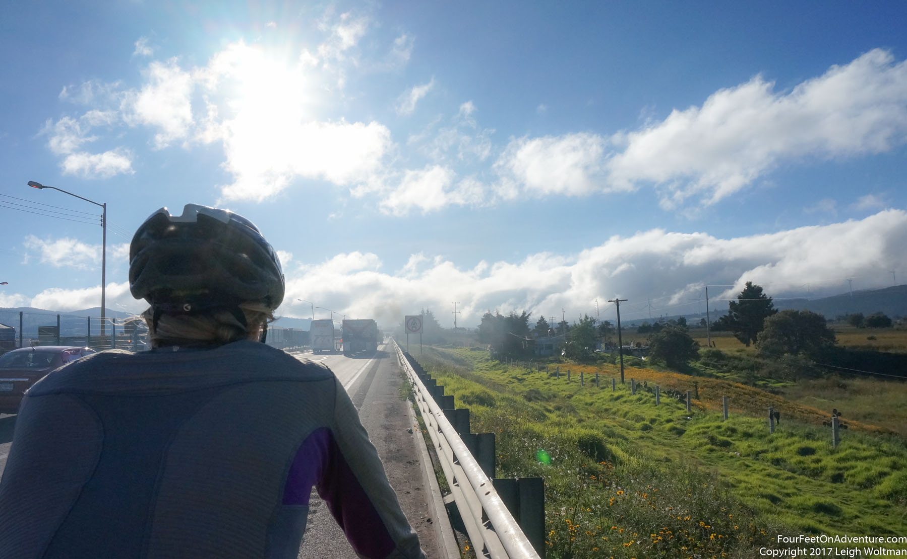
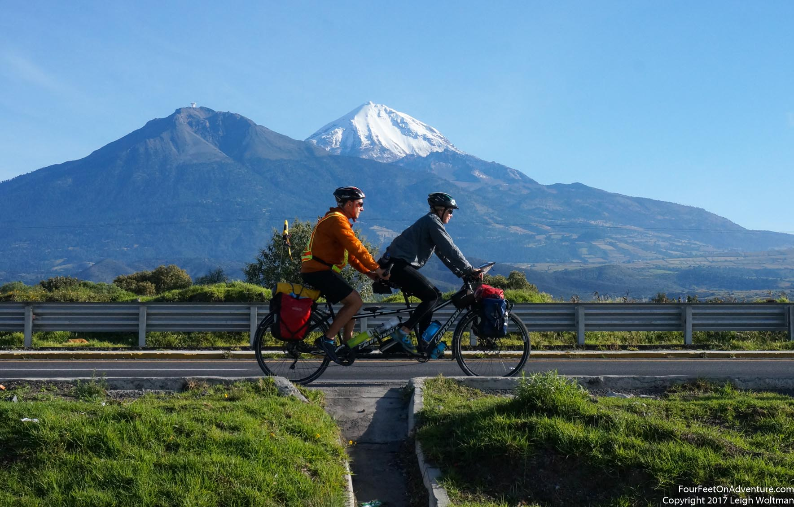
Soon, the road tipped forward. We could see clouds pushing up against the plateau and as we started to descend we dropped into them. It was now damp and foggy, we had the bike lights on but we were keeping a keen eye on traffic behind us. We accelerated as we started loosing altitude in a steep downward hill. The landscape has quickly turned lush and treed. We came up to our first tunnel, it was a short one and there was enough of a shoulder we could ride through. We hadn't thought about tunnels as some can be unrideable. We continued our descent, we pushed through several tunnels, sometimes trailing transport trucks. The didn't hold back their use of engine braking, and the sound echoing in the tunnel sounded like you head was inside the engines cylinders. Further along, we ended up having to pass some trucks as they eased their load down the steep mountainside.
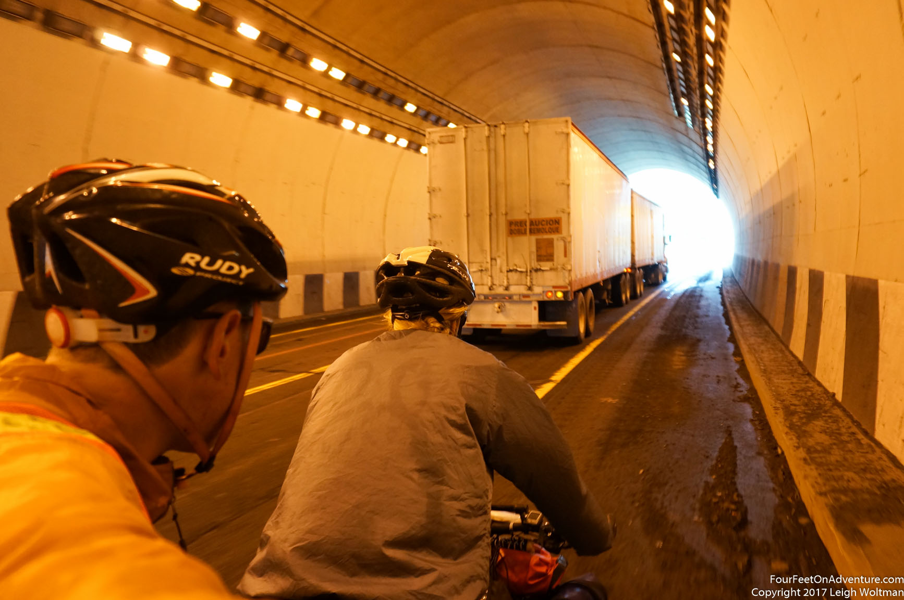
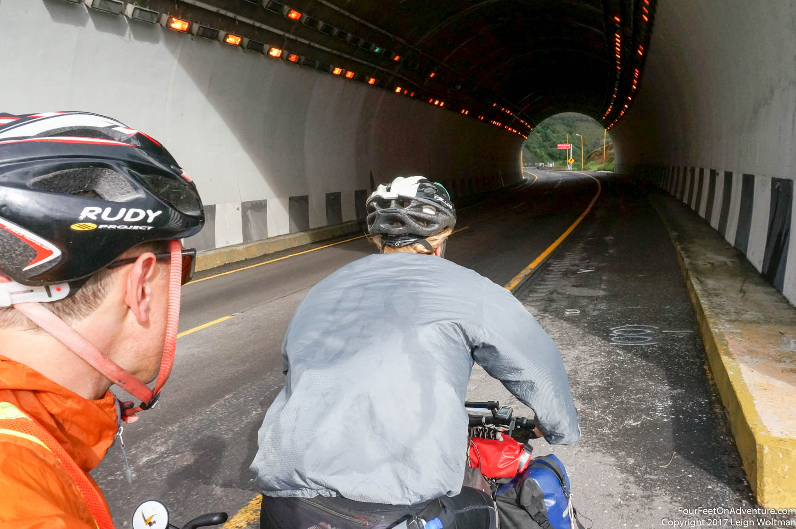
The road swung back to the right and we were able to look up and see how far we had come down as the road cut a line through the trees above us. It certainly looked impressive, and we checking the GPS we found we had only dropped about a kilometer so there was still much more elevation to keep the brake pads warm. The steepness abated and we rolled along seeing a huge valley with spectacular views in front of us. The clouds we had passed through were now above us.
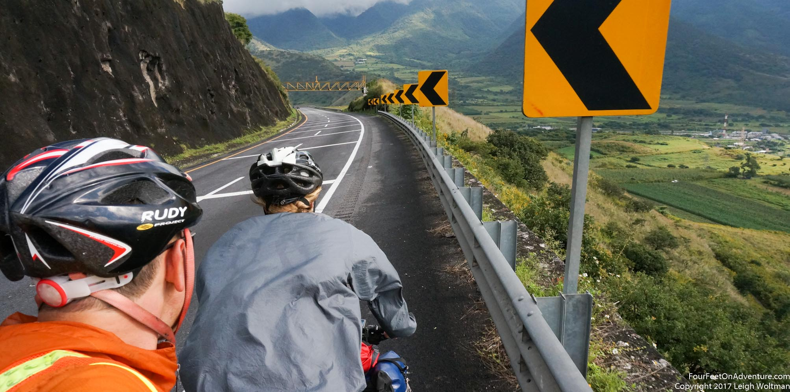
The town of Orizaba came up beside the highway, we initially decided to exit the toll highway and take the secondary route but once in town we found rough and slow roads, so at the next opportunity rejoined the toll highway. Green grass was a noticeable change and we cross creeks and rivers gushing with water. Such a different from the dry plateau above. We were still losing elevation so the pedaling was relatively easy, but our rate of descent had slowed considerably and instead of a hill requiring us to brake we were now just assisted along as we pedalled. The temperature had risen and along the way we had stripped back much of our layers.
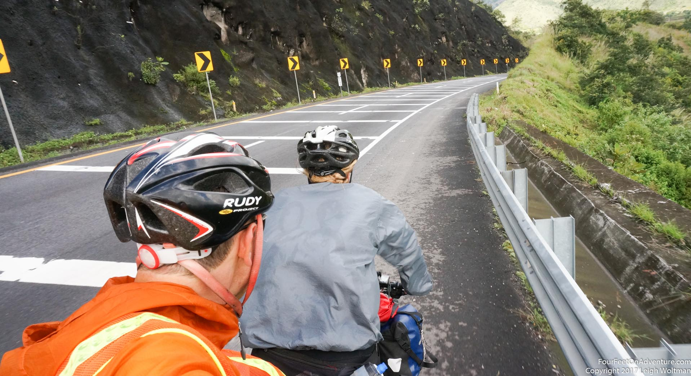
Along the way down we had been discussing what we wanted to do. The turn where we would head south to the Chiapas and Guatemala was coming up. Evaluating our distance, we were making alright progress, but we would have to continue this pace all the way south to make it to Guatemala on time. We somewhat lost a day with the riot police blocking our hotel in Mexico City and our remaining days would probably give us no rest days or options to wait out rainy weather. It is so unfamiliar to make choices based upon now a fixed end date. We still want to explore and take the risk of cycling, but we also now feel a little more reserved. We decide that we would rather see a little more than the road south and decide we will continue our eastward route and end the cycling in Veracruz on the Gulf of Mexico coast. We eventually pass the turn south and already wonder if we have made the wrong decision. It is a long pedal into Veracruz. We are clearly on a coastal plain as the elevation keeps dropping to the point where we are dozens of kilometers from the ocean but we are barely above sea level. All our elevation has been used up, and we must now face the full implications of pedalling. In a fitting twist, some coconuts litter the highway that recently fell in from the jungle around, quite a contrast to our morning start in the cold desert.
The road into Veracruz is long and we are not used to the heat. We soon are rationing the last few sips of water hoping for some type of convenience store. We pass nothing until finally a gas station appears on the signage. We struggle through the last couple kilometers until we are able to purchase cold drinks. Veracruz is busy but not difficult to cycle in. We pedal all the way to the downtown area on the waterfront where we find a hotel with air conditioning and cool our tired bodies.
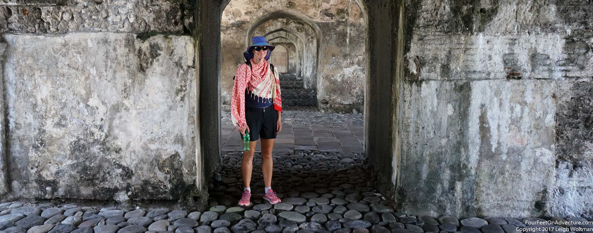
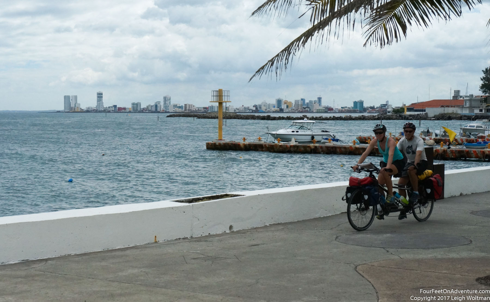
We spend a couple days here. First relaxing and bittersweetly toasting the end of our cycling. Then we get back to work, trying to locate supplies to package the bicycle up in a box. We end up buying two cardboard boxes from a bicycle store and then finding a Home Depot where we can buy some thin strips of wood and hacksaw blade to cut them with. It takes a surprisingly long time to disassemble enough of the bicycle to to get it into the box, but once done, we seem to get it pretty secure. However, it is certainly heavy, and we realize moving this box around will not be easy.
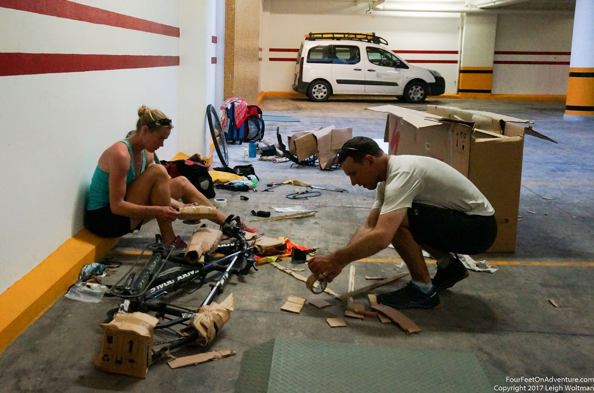
Please send us an email, we would love to hear from you!